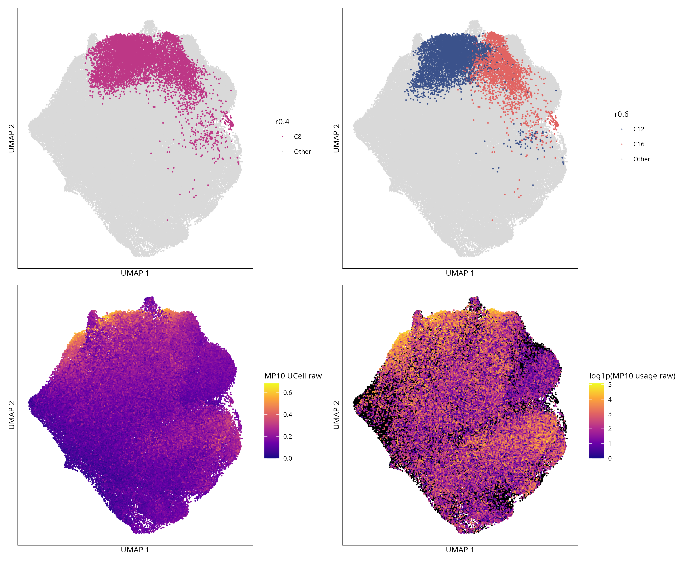
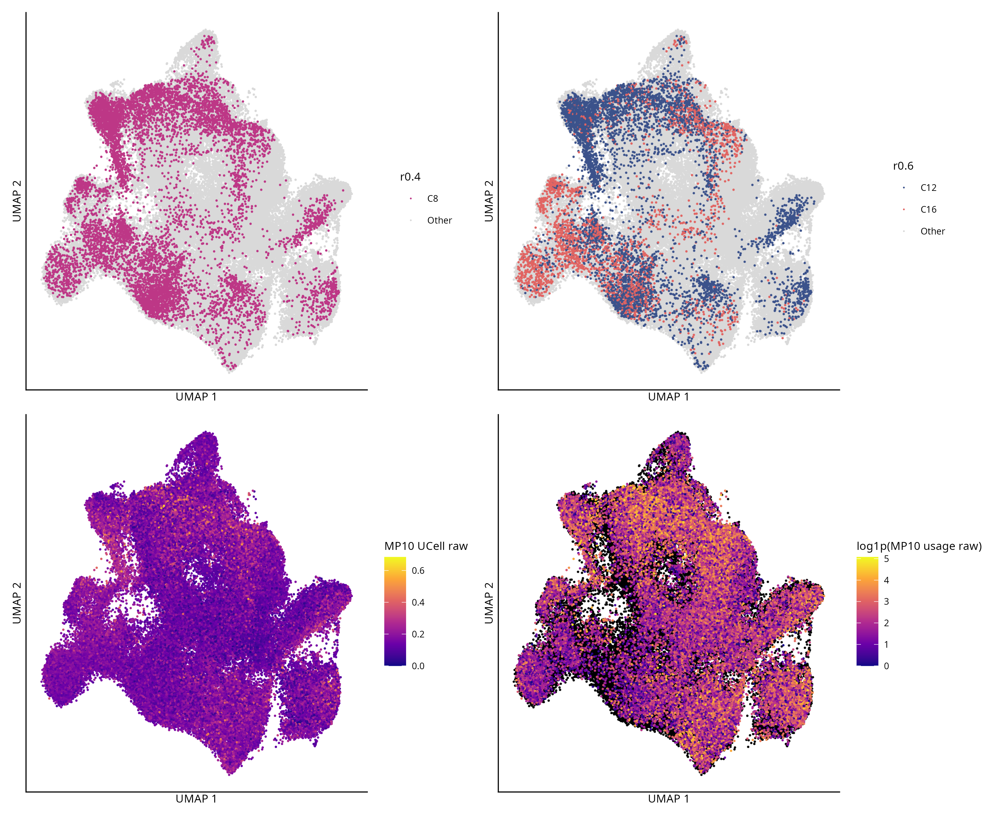
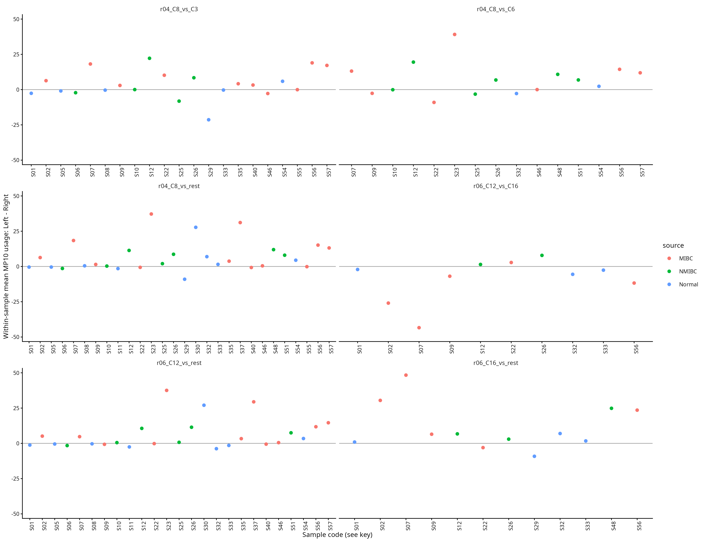
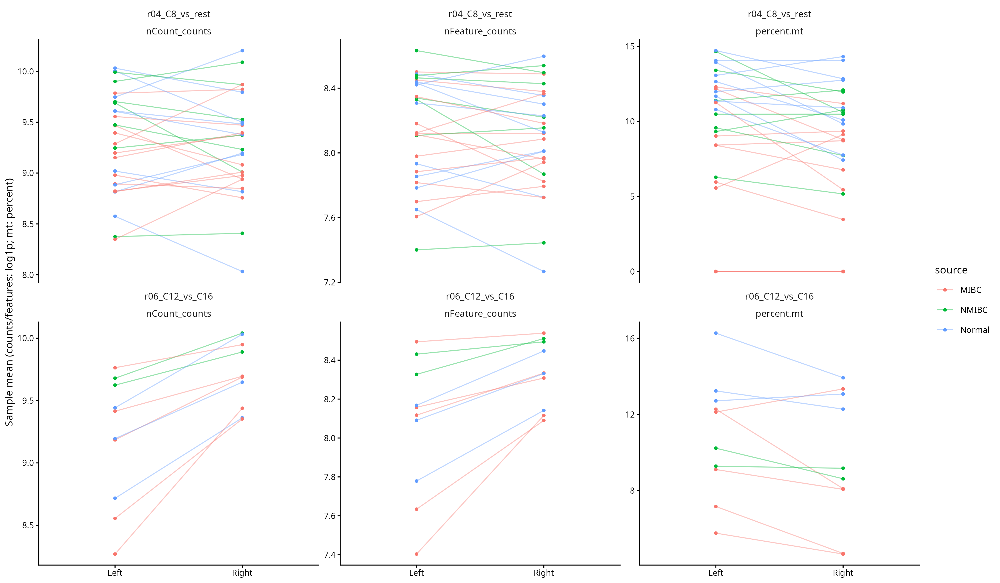
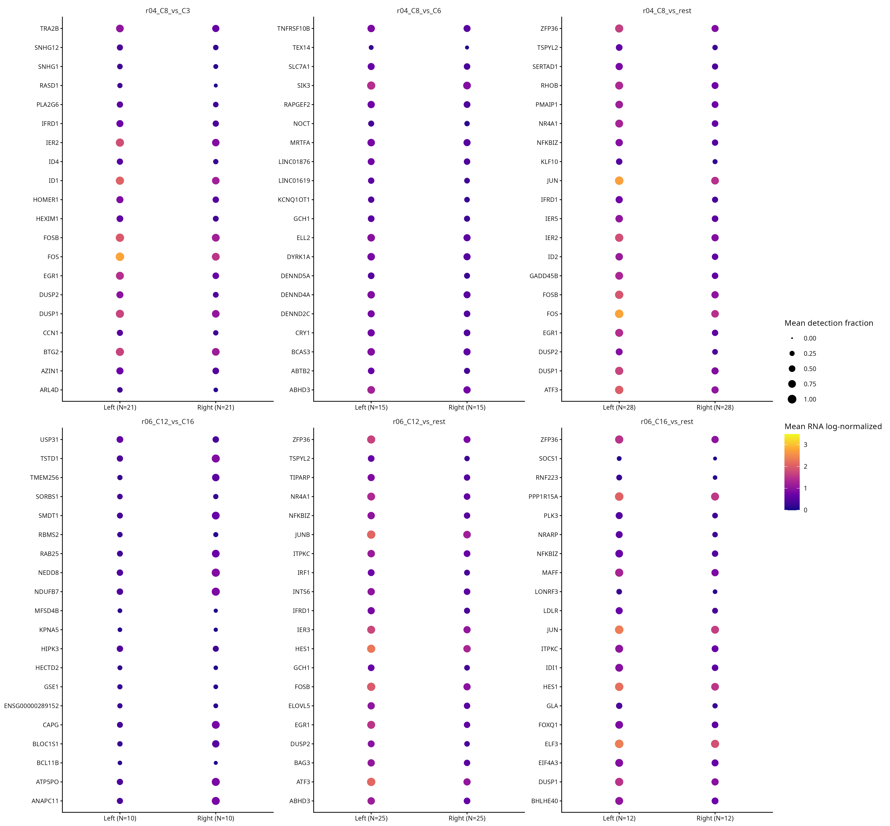
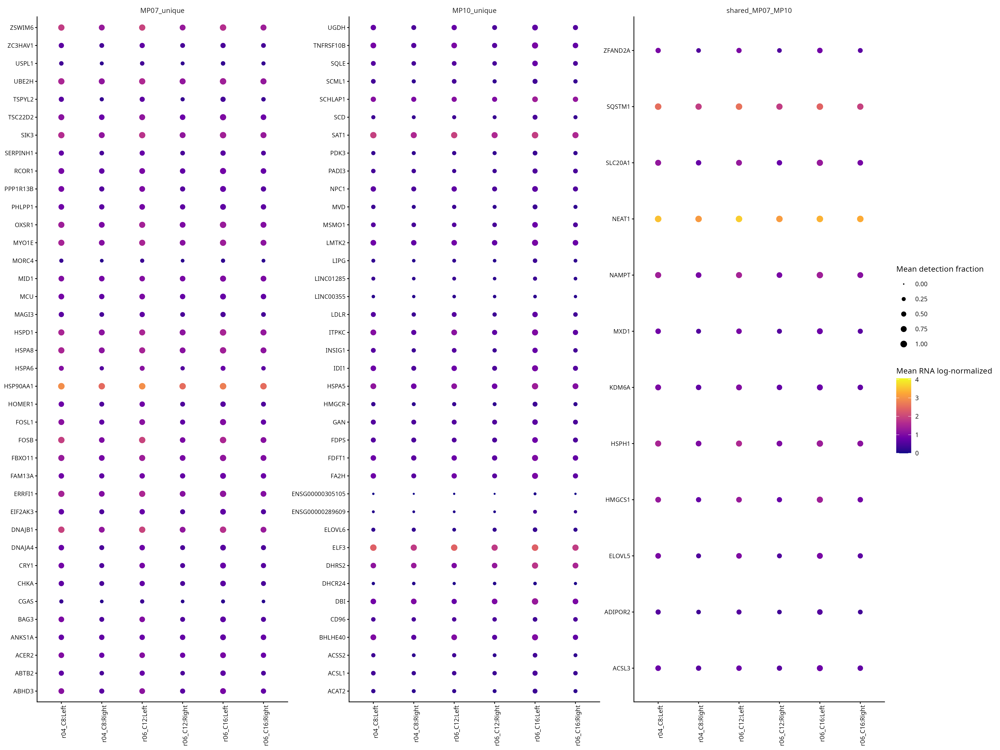

完成日期：2026-10-08。分析目录：/home/data/t070721/codex_workspace/Bladder Metabolism/mp_ucell_state_followup_v2
主要判断：C8具有跨样本的原MP10 usage及部分非共享脂质/甾醇基因支持；C12/C16存在可重复表达差异，但深度和来源限制明显。优先保留完整C8作下一轮独立marker评估，C12/C16作为并行比较状态。目前不足以确认两个独立生物学亚群，更适合描述内部异质、可能连续的MP10相关程序。
技术状态：六项固定配对pseudobulk全部完成。既有NMF、14MP、分数、标签和两套UMAP均未重算或修改。输出51套PDF/透明300dpi PNG，全部附绘图数据。证据不足不是程序失败。
FULL=123,699细胞、57个biological specimen、5个dataset，保留22,436个Normal。C8=8,603，C12=5,596，C16=2,779；交集分别5,444与2,674。C12/C16使用完整原群；与C8的重叠不是独立复现。两套resolution分别统计，没有三组互斥检验。
原RNA counts为90,011×123,699稀疏整数矩阵；普通RNA LogNormalize data验证通过。41个recorded patient key均未独立核实（37个sample derived，20个provisional）；16个key各有2个sample。只能称跨样本，不能称独立患者验证。
00_audit/identity_checks.tsv · 00_audit/input_manifest.tsv · 00_audit/sample_mapping.tsv · 00_audit/counts_check.tsv
C8 vs rest在28个合格sample中20正、8负；差中位数2.876，IQR −0.201至11.518，sample等权平均usage为12.546 vs 5.542。四个dataset的正向数分别CNP 6/10、HRA 6/8、Inhouse 3/4、PRJNA 5/6。来源分层Normal 5/9、MIBC 9/12、NMIBC 6/7。UCell为28/28正，因此原usage衔接支持是多数样本而非普遍一致。
C12 vs C16有10对，其中原usage和UCell均7对为C16更高；原usage差中位数−4.078，探索性FDR0.177。C16 vs rest有10/12正但FDR0.152；不要把方向支持与统计不确定性混为一谈。完整14MP概览可判断共同程序，未把其他usage归一化成MP10比例。
| 比较 | 配对sample | dataset | 检验基因 | usage正/负 | usage差中位数[IQR] | 探索性usage FDR |
|---|---|---|---|---|---|---|
| r04_C8_vs_rest | 28 | 4 | 15902 | 20/8 | 2.88 [-0.201, 11.5] | 0.00298 |
| r06_C12_vs_C16 | 10 | 3 | 7298 | 3/7 | -4.08 [-10.5, 0.545] | 0.177 |
| r06_C12_vs_rest | 25 | 4 | 15967 | 15/10 | 0.737 [-0.564, 10.6] | 0.0263 |
| r06_C16_vs_rest | 12 | 3 | 15739 | 10/2 | 6.59 [1.52, 23.9] | 0.152 |
| r04_C8_vs_C6 | 15 | 4 | 11479 | 10/5 | 6.81 [-1.37, 12.5] | 0.0727 |
| r04_C8_vs_C3 | 21 | 4 | 9676 | 12/9 | 2.96 [-0.939, 8.4] | 0.14 |
01_usage_bridge/MP10_sample_equal_summary.tsv · 01_usage_bridge/pooled_cell_weighted_14MP.tsv · 01_usage_bridge/frozen_MP10_high_coverage.tsv · 00_audit/comparison_eligibility_with_libraries.tsv
C12 vs C16的10对来自CNP0000460 5、HRA003620 4、PRJNA662018 1；Normal3、MIBC5、NMIBC2。Inhouse和GSE没有合格C12/C16配对，不能从其少量细胞声称重复。该比较测试7,298基因，2,966在该表BH FDR<0.05（1,427左高、1,539右高），均是分群后发现阶段筛选，不是确认性验证。
C12高于C16的HIPK3、GSE1样本方向均10/10，log2FC约0.79、0.98；C16高的CAPG、RAB25、TMEM256亦10/10同向，但它们相对全体rest并不显著更高，其他群也高。C8/C12的vs-rest短名单富含EGR1、ATF3、FOS/JUN等信号。EGR1具有即时诱导应答性质，因而“应答较强”是合理的候选解释，尚不能据此区分体内状态与处理过程影响。EGR1原始研究
| sample | 来源 | C12 | C16 |
|---|---|---|---|
| CNP0000460|CNP0000460_P01N | Normal | 40 | 41 |
| CNP0000460|CNP0000460_P01T | MIBC | 1281 | 34 |
| CNP0000460|CNP0000460_P04T | MIBC | 94 | 48 |
| CNP0000460|CNP0000460_P05T | MIBC | 731 | 228 |
| CNP0000460|CNP0000460_P07T | NMIBC | 694 | 31 |
| HRA003620|HRA003620_BC-04 | MIBC | 466 | 40 |
| HRA003620|HRA003620_BC-27 | NMIBC | 98 | 38 |
| HRA003620|HRA003620_NC-24 | Normal | 59 | 1062 |
| HRA003620|HRA003620_NC-27 | Normal | 49 | 869 |
| PRJNA662018|PRJNA662018_PRJNA662018_P7T7 | MIBC | 78 | 47 |
02_pseudobulk_markers/model_summary.tsv · 03_marker_review/display_marker_evidence.tsv
C16有2,190/2,779（78.8%）来自HRA003620；NC-24与NC-27合计1,931（69.5%）。C12最大单一样本P01T占22.9%，C8最大占14.9%。这些组成使用完整FULL细胞分母，没有把抽样比例当丰度。取材Normal/NMIBC/MIBC不是逐细胞恶性身份，不推断进展方向。
全部10个C12/C16配对样本中C16的平均nCount和nFeature均高；C12−C16的样本差中位数分别−5,983.9、−861.9。percent.mt有8/10为C12更高，中位差+1.07个百分点。TMM及配对模型并不自动消除这些与状态耦合的检测率/质量差异，故C16高检出基因不能直接视为特异marker。本轮按授权未回归QC、删除样本/细胞或改群。
| 比较 | QC | 配对数 | 左减右中位差 | 正/负 |
|---|---|---|---|---|
| r06_C12_vs_C16 | nCount_counts | 10 | -5.98e+03 | 0/10 |
| r06_C12_vs_C16 | nFeature_counts | 10 | -862 | 0/10 |
| r06_C12_vs_C16 | percent.mt | 10 | 1.07 | 8/2 |
| state | dataset | 细胞数 | 占该群% | 占dataset完整池% |
|---|---|---|---|---|
| C8 | CNP0000460 | 3760 | 43.7 | 7.62 |
| C8 | GSE326225 | 3 | 0.0349 | 0.0477 |
| C8 | HRA003620 | 3868 | 45 | 19.9 |
| C8 | InhouseData | 442 | 5.14 | 3.28 |
| C8 | PRJNA662018 | 530 | 6.16 | 1.51 |
| C12 | CNP0000460 | 3211 | 57.4 | 6.51 |
| C12 | GSE326225 | 1 | 0.0179 | 0.0159 |
| C12 | HRA003620 | 1576 | 28.2 | 8.11 |
| C12 | InhouseData | 446 | 7.97 | 3.31 |
| C12 | PRJNA662018 | 362 | 6.47 | 1.03 |
| C16 | CNP0000460 | 443 | 15.9 | 0.898 |
| C16 | GSE326225 | 2 | 0.072 | 0.0318 |
| C16 | HRA003620 | 2190 | 78.8 | 11.3 |
| C16 | InhouseData | 8 | 0.288 | 0.0594 |
| C16 | PRJNA662018 | 136 | 4.89 | 0.386 |
03_marker_review/source_composition.tsv · 03_marker_review/QC_sample_paired_differences.tsv · 00_audit/paired_source_coverage.tsv
固定规则的每项短名单最多20；展示每state最多3。C8建议EGR1/GADD45B/ELOVL5并看：EGR1相对C6、C3的log2FC约0.57、1.70，方向13/15、21/21；ELOVL5为1.38、1.17，方向15/15、19/21。GADD45B在r0.4 C13更高，不能当C8特异标记。ELOVL5是MP07/MP10共享输入基因，只作脂质支持。
C12用HIPK3/GSE1辅助区分C16，但它们相对rest效应较小且其他群可更高；ELOVL5不区分C12/C16。C16的NRARP/IDI1/LDLR是支持性候选：NRARP与C12近似，IDI1在C18更高，LDLR在C14更高；均不足以单基因定义C16。CAPG/RAB25/TMEM256不优先作特异标记。具体反例包括：C8相对C6的EGR1在CNP_P04T、PRJNA_P1T1并不更高；C8相对C3的ELOVL5在HRA_NC-04、HRA_NC-27并不更高。完整样本key与反例另表列出，没有挑选只支持的样本。
| state | gene | 角色/限制 | 更高其他群 | 其他群≥目标数 | 参与14MP |
|---|---|---|---|---|---|
| C8 | EGR1 | Best of these C8 discrimination candidates; inducible transcription signal | C6 | 0 | TRUE |
| C12 | ELOVL5 | C12 lipid-support gene; not a C12/C16 discriminator | C14 | 1 | TRUE |
| C8 | ELOVL5 | Lipid-support gene with local C6/C3 support; broader program, not C8-specific | C12 | 0 | TRUE |
| C8 | GADD45B | Supportive response gene; C13 expression higher | C13 | 1 | TRUE |
| C12 | GSE1 | C12 versus C16 discriminator; modest detection; C14/C15 may be higher | C14 | 2 | FALSE |
| C12 | HIPK3 | C12 versus C16 expression discriminator; weaker versus rest | C14 | 1 | FALSE |
| C16 | IDI1 | C16 sterol-support gene; MP10 input gene; not C16-specific | C18 | 1 | TRUE |
| C16 | LDLR | C16 lipid-uptake support; MP10 input gene; not C16-specific | C14 | 2 | TRUE |
| C16 | NRARP | C16 versus rest candidate; C12 nearly equal; limited subtype specificity | C12 | 0 | FALSE |
03_marker_review/display_markers.tsv · 03_marker_review/display_marker_counterexamples.tsv · 03_marker_review/all_shortlists.tsv · 03_marker_review/shortlist_alternative_cluster_specificity.tsv
MP07独有38、MP10独有38、共享12，与冻结列表一致。限定于本地GO带脂质/甾醇关键词的MP10独有基因，C8的IDI1和INSIG1均27/28样本高、LDLR26/28、HMGCR24/28、FDFT1及MVD22/28；因此信号不只来自共享基因。但DBI仅8/28、DHCR24仅7/28更高，不能称整条通路整齐激活。C16相对rest有较多同向支持，C12/C16之间并非所有脂质基因均能区分。
本轮称“MP10相关脂质/甾醇代谢候选状态”。RNA表达不足以证明代谢通量、蛋白阳性或脂肪酸代谢已验证亚群。GO关键词审查是有限注释，不是富集检验；原MP10/MP07分数及top50均未改动。
03_marker_review/MP07_MP10_gene_partition.tsv · 03_marker_review/MP07_MP10_per_gene_summary.tsv · 03_marker_review/MP07_MP10_lipid_sterol_annotation.tsv
优先完整C8的多基因独立验证，同时保留C12/C16对照，尤其检查响应基因、脂质支持基因与深度/取材条件的关系。C16虽有较强MP10支持，来源集中和QC耦合使其暂不适合作为唯一主推的新亚群；C12也不宜直接替代C8。当前更支持有内部差异的MP10程序，连续性与稳定离散状态仍不能区分。此次没有运行空间、CNV、预后、机制或蛋白验证，不将原NMF预后效应转写给新群。
全部技术模块已执行；受限的是独立患者重复、GSE及部分来源的合格配对、QC混杂与外部生物学验证。原usage、输入marker、非输入marker均来自同批RNA；C8/C12/C16重叠和不同resolution不是外部复现。
candidate_decision.tsv · METHODS.md · DECISIONS.md





